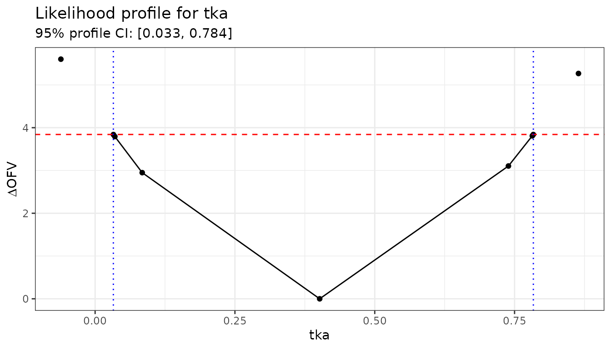
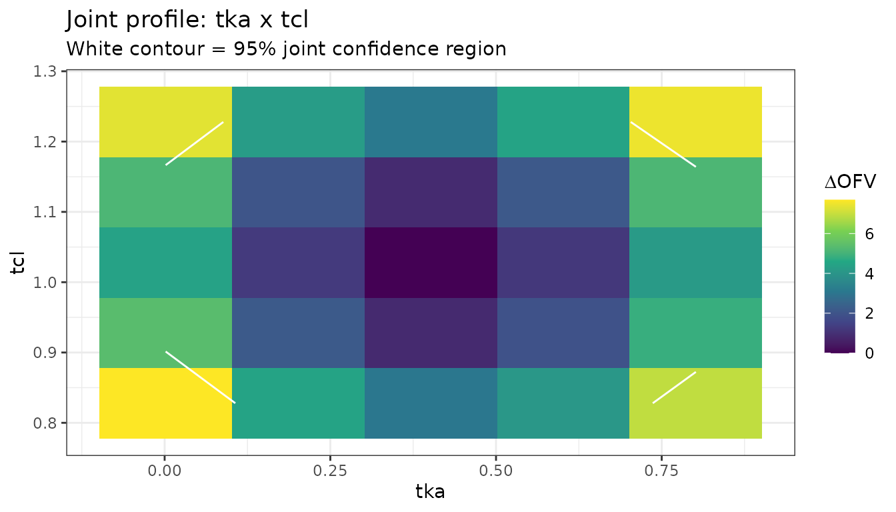

Likelihood Profiling for NLME Models
Bill Denney
2026-09-11
Source:vignettes/articles/likelihood-profiling.Rmd
likelihood-profiling.RmdIntroduction
Wald-based confidence intervals (CIs), which are the default output
from nlmixr2, rely on the assumption that the parameter
estimates are normally distributed. For parameters near boundaries, or
for variance components of random effects, this assumption often breaks
down and the resulting CIs can be misleading.
Likelihood profiling provides a more reliable alternative. Rather than approximating the likelihood surface with a quadratic, it evaluates the actual objective function (OFV) at a grid of parameter values, holding each parameter fixed in turn and re-estimating the rest. A parameter’s confidence interval is the set of values whose OFV increase relative to the minimum is below a threshold – by default .
nlmixr2extra provides two profiling methods via the
profile() generic:
| Method | Function | Description |
|---|---|---|
"llp" |
profileLlp() |
Adaptive log-likelihood profiling – searches for the exact OFV boundary |
"fixed" |
profileFixed() |
Evaluates the OFV at user-supplied fixed values |
Quick start
Define and fit a model
We use the single-dose theophylline dataset (theo_sd)
from nlmixr2data.
library(nlmixr2extra)
library(ggplot2)
oneCmt <- function() {
ini({
tka <- log(1.57) # log absorption rate constant
tcl <- log(2.72) # log clearance
tv <- log(31.5) # log volume (fixed)
eta.ka ~ 0.6
eta.cl ~ 0.09
add.sd <- 0.7
})
model({
ka <- exp(tka + eta.ka)
cl <- exp(tcl + eta.cl)
v <- exp(tv)
cp <- linCmt()
cp ~ add(add.sd)
})
}
fit := nlmixr2(oneCmt, data = nlmixr2data::theo_sd,
est = "focei", control = list(print = 0))
fitProfile all parameters
# Profiles tka and tcl; eta.ka, eta.cl, and add.sd are also included.
profAll := profile(fit)
#> ℹ loading from likelihood-profiling-profAll.rds
profAll
#> Parameter OFV tka tcl tv add.sd
#> 1 tka 130.2895 0.40153830 1.0278836 3.4295255 7.819052e-01
#> 2 tka 135.8912 -0.06120955 1.0360628 3.4203802 7.810391e-01
#> 3 tka NA 0.03260143 NA NA NA
#> 4 tka 134.1288 0.03271627 1.0350141 3.4208530 7.812764e-01
#> 5 tka 134.0829 0.03528035 1.0351139 3.4208320 7.811889e-01
#> 6 tka 133.2386 0.08420023 1.0346181 3.4213993 7.812900e-01
#> 7 tka 133.3939 0.73903804 1.0192860 3.4385565 7.821123e-01
#> 8 tka 134.0994 0.78172572 1.0188197 3.4392264 7.822249e-01
#> 9 tka 134.1298 0.78351823 1.0188477 3.4392419 7.820724e-01
#> 10 tka NA 0.78358502 NA NA NA
#> 11 tka 135.5566 0.86428615 1.0180805 3.4401796 7.822978e-01
#> 12 tcl 130.2895 0.40153830 1.0278836 3.4295255 7.819052e-01
#> 13 tcl 166.0851 0.43063881 -0.1566882 3.4458326 7.868505e-01
#> 14 tcl NA NA 0.7989937 NA NA
#> 15 tcl 134.1289 0.41778827 0.7990577 3.4384113 7.835939e-01
#> 16 tcl 134.1156 0.41749888 0.7995185 3.4383893 7.836194e-01
#> 17 tcl 134.0216 0.41795155 0.8027911 3.4383068 7.836876e-01
#> 18 tcl 133.4478 0.41702370 0.8233050 3.4378203 7.833090e-01
#> 19 tcl 131.6055 0.41179773 0.9007595 3.4351561 7.827614e-01
#> 20 tcl 131.6107 0.39369240 1.1535003 3.4247717 7.815867e-01
#> 21 tcl 133.4621 0.39102319 1.2299623 3.4232093 7.815756e-01
#> 22 tcl 134.0285 0.39073028 1.2498464 3.4230214 7.813946e-01
#> 23 tcl 134.1174 0.39016263 1.2528827 3.4230072 7.815514e-01
#> 24 tcl 134.1292 0.39082650 1.2532866 3.4230018 7.814750e-01
#> 25 tcl NA NA 1.2533396 NA NA
#> 26 tcl 166.5147 0.38693741 2.2124554 3.4209838 7.826220e-01
#> 27 tv 130.2895 0.40153830 1.0278836 3.4295255 7.819052e-01
#> 28 tv 231.0193 -3.14398204 0.5588538 -0.5227888 1.301043e+00
#> 29 tv 160.5725 0.13479013 1.1473982 3.2787989 8.841199e-01
#> 30 tv 134.1156 0.31702529 1.0686424 3.3803737 7.906060e-01
#> 31 tv 134.0942 0.31734179 1.0685053 3.3805151 7.904998e-01
#> 32 tv 134.0433 0.31788884 1.0682572 3.3808524 7.903636e-01
#> 33 tv 133.9242 0.31932087 1.0676208 3.3816505 7.900005e-01
#> 34 tv 133.6545 0.32254144 1.0660969 3.3835039 7.892147e-01
#> 35 tv 133.0897 0.32970079 1.0627068 3.3876274 7.875765e-01
#> 36 tv 132.0946 0.34427523 1.0557941 3.3960087 7.848158e-01
#> 37 tv 130.8832 0.36920588 1.0437568 3.4104055 7.819798e-01
#> 38 tv 132.0399 0.45754681 0.9988603 3.4623665 7.922055e-01
#> 39 tv 134.0805 0.48356909 0.9848542 3.4780321 8.017626e-01
#> 40 tv NA NA NA 3.4783533 NA
#> 41 tv 134.4153 0.48704670 0.9829897 3.4801623 8.032996e-01
#> 42 tv 592.5970 -2.20918672 29.3509751 7.3818398 5.724111e+00
#> 43 add.sd 130.2895 0.40153830 1.0278836 3.4295255 7.819052e-01
#> 44 add.sd 141.3580 0.40521426 1.0225466 3.4355804 1.490116e-08
#> 45 add.sd 183.2415 0.40060147 1.0321066 3.4240425 5.105346e-01
#> 46 add.sd 130.8889 0.40235730 1.0266305 3.4306330 8.252030e-01
#> 47 add.sd 132.1226 0.40269356 1.0262105 3.4315382 8.602525e-01
#> 48 add.sd 133.1296 0.40325618 1.0253784 3.4321163 8.814067e-01
#> 49 add.sd 133.6883 0.40323673 1.0251800 3.4324090 8.918168e-01
#> 50 add.sd 133.9460 0.40312079 1.0250480 3.4325264 8.963927e-01
#> 51 add.sd 134.0556 0.40376780 1.0249541 3.4326054 8.982999e-01
#> 52 add.sd 134.1005 0.40362974 1.0251401 3.4326447 8.990769e-01
#> 53 add.sd 134.1188 0.40320335 1.0250444 3.4326211 8.993904e-01
#> 54 add.sd 134.1261 0.40368832 1.0249427 3.4326342 8.995163e-01
#> 55 add.sd NA NA NA NA 8.995669e-01
#> 56 add.sd 210.2365 0.42691799 0.9991699 3.4615924 1.683002e+00
#> eta.ka eta.cl profileBound
#> 1 0.329035499 0.121102205 NA
#> 2 0.538564672 0.120269658 NA
#> 3 NA NA -3.841459
#> 4 0.458539898 0.119833239 NA
#> 5 0.456196184 0.119756272 NA
#> 6 0.422478176 0.119852336 NA
#> 7 0.452367096 0.122130420 NA
#> 8 0.482905205 0.122447707 NA
#> 9 0.484150414 0.122335086 NA
#> 10 NA NA 3.841459
#> 11 0.553262792 0.122191126 NA
#> 12 0.329035499 0.121102205 NA
#> 13 0.332483048 0.605508310 NA
#> 14 NA NA -3.841459
#> 15 0.331163211 0.171647781 NA
#> 16 0.331318653 0.171677860 NA
#> 17 0.330995621 0.170571723 NA
#> 18 0.331475511 0.161621084 NA
#> 19 0.330778140 0.136949382 NA
#> 20 0.327770744 0.135188902 NA
#> 21 0.327262106 0.159362774 NA
#> 22 0.327490620 0.167275993 NA
#> 23 0.326849106 0.168592207 NA
#> 24 0.327213834 0.168803615 NA
#> 25 NA NA 3.841459
#> 26 0.325723106 0.605508310 NA
#> 27 0.329035499 0.121102205 NA
#> 28 0.025438031 0.026981276 NA
#> 29 0.277291057 0.100762926 NA
#> 30 0.315907986 0.114525102 NA
#> 31 0.316012260 0.114547830 NA
#> 32 0.316064781 0.114582084 NA
#> 33 0.316336670 0.114679185 NA
#> 34 0.316908291 0.114930753 NA
#> 35 0.318166867 0.115495153 NA
#> 36 0.320535927 0.116634251 NA
#> 37 0.324478713 0.118461288 NA
#> 38 0.335264048 0.125172731 NA
#> 39 0.337275699 0.127218547 NA
#> 40 NA NA 3.841459
#> 41 0.337410533 0.127555949 NA
#> 42 0.003557558 0.003184402 NA
#> 43 0.329035499 0.121102205 NA
#> 44 0.301533722 0.114334105 NA
#> 45 0.359139601 0.126828241 NA
#> 46 0.323821893 0.119838836 NA
#> 47 0.319437093 0.118688815 NA
#> 48 0.316902498 0.117974399 NA
#> 49 0.315842544 0.118069782 NA
#> 50 0.315445663 0.117687340 NA
#> 51 0.314618073 0.117563640 NA
#> 52 0.314631349 0.117703748 NA
#> 53 0.314998293 0.117643523 NA
#> 54 0.314842537 0.117662521 NA
#> 55 NA NA 3.841459
#> 56 0.199948027 0.081175884 NAProfile a single parameter
profTka := profile(fit, which = "tka")
#> ℹ loading from likelihood-profiling-profTka.rds
profTka
#> Parameter OFV tka tcl tv add.sd eta.ka
#> 1 tka 130.2895 0.40153830 1.027884 3.429526 0.7819052 0.3290355
#> 2 tka 135.8912 -0.06120955 1.036063 3.420380 0.7810391 0.5385647
#> 3 tka NA 0.03260143 NA NA NA NA
#> 4 tka 134.1288 0.03271627 1.035014 3.420853 0.7812764 0.4585399
#> 5 tka 134.0829 0.03528035 1.035114 3.420832 0.7811889 0.4561962
#> 6 tka 133.2386 0.08420023 1.034618 3.421399 0.7812900 0.4224782
#> 8 tka 133.3939 0.73903804 1.019286 3.438556 0.7821123 0.4523671
#> 9 tka 134.0994 0.78172572 1.018820 3.439226 0.7822249 0.4829052
#> 10 tka 134.1298 0.78351823 1.018848 3.439242 0.7820724 0.4841504
#> 11 tka NA 0.78358502 NA NA NA NA
#> 12 tka 135.5566 0.86428615 1.018080 3.440180 0.7822978 0.5532628
#> eta.cl profileBound
#> 1 0.1211022 NA
#> 2 0.1202697 NA
#> 3 NA -3.841459
#> 4 0.1198332 NA
#> 5 0.1197563 NA
#> 6 0.1198523 NA
#> 8 0.1221304 NA
#> 9 0.1224477 NA
#> 10 0.1223351 NA
#> 11 NA 3.841459
#> 12 0.1221911 NAThe log-likelihood profiling method ("llp")
profileLlp() uses an adaptive algorithm:
- Start from the point estimate and step in both directions.
- At each step, fix the target parameter and re-estimate all others.
- Stop when the OFV change is within
ofvtolof the desiredofvIncrease, or when the next parameter step would not change its rounded value toparamDigitssignificant figures.
Control options
All LLP settings are set via llpControl():
# Default settings
ctrl <- llpControl(
ofvIncrease = qchisq(0.95, df = 1), # ~3.84 for 95% CI
rseTheta = 30, # starting step size as % of the estimate
itermax = 10, # max iterations per direction
ofvtol = 0.005, # tolerance on OFV difference
paramDigits = 3 # significant digits for convergence
)
# a separate name: each `:=` target is its own cache entry
profTkaCtrl := profile(fit, which = "tka", control = ctrl)
#> ℹ loading from likelihood-profiling-profTkaCtrl.rdsTo get a 90% CI instead of 95%, lower the threshold:
Interpreting the output
The returned data frame has one row per model evaluation. Key columns:
-
Parameter– which parameter was fixed on this row -
OFV– the objective function value at that step -
profileBound– present on the boundary rows; its absolute value is theofvIncreasethreshold and its sign indicates lower (-) or upper (+) - One column per model parameter showing its estimate at each step
# Show rows near the boundary
profTka[!is.na(profTka$profileBound), ]
#> Parameter OFV tka tcl tv add.sd eta.ka eta.cl profileBound
#> 3 tka NA 0.03260143 NA NA NA NA NA -3.841459
#> 11 tka NA 0.78358502 NA NA NA NA NA 3.841459The rows where profileBound is non-NA give
the profile CI limits directly from the tka column.
Plotting the profile
The profile data frame contains everything needed for a profile plot. A standard presentation shows OFV - OFV_min on the y-axis and the parameter value on the x-axis, with a horizontal reference line at the CI threshold.
# Compute Delta OFV relative to the minimum
ofvMin <- min(profTka$OFV, na.rm = TRUE)
profTka$dOFV <- profTka$OFV - ofvMin
# The two boundary rows (one per direction)
bounds <- profTka[!is.na(profTka$profileBound), ]
ggplot(profTka, aes(x = tka, y = dOFV)) +
geom_line() +
geom_point() +
geom_hline(yintercept = qchisq(0.95, 1), linetype = "dashed", colour = "red") +
geom_vline(xintercept = bounds$tka, linetype = "dotted", colour = "blue") +
labs(
x = "tka",
y = expression(Delta * "OFV"),
title = "Likelihood profile for tka",
subtitle = sprintf(
"95%% profile CI: [%.3f, %.3f]",
min(bounds$tka), max(bounds$tka)
)
) +
theme_bw()
#> Warning: Removed 2 rows containing missing values or values outside the scale range
#> (`geom_point()`).
A symmetric, approximately parabolic profile indicates the Wald CI is reliable. An asymmetric or flat profile indicates non-normality; in these cases the profile CI is more trustworthy.
The fixed-point method ("fixed")
profileFixed() evaluates the OFV at a user-supplied grid
rather than searching adaptively. It is useful when you want to
reproduce a specific grid (e.g. for a table or a plot comparing multiple
models) or when the adaptive algorithm struggles.
Evaluating a uniform grid
# Evaluate tka at seven equally spaced values around the point estimate
tkaEst <- fit$theta["tka"]
grid <- data.frame(tka = seq(tkaEst - 0.6, tkaEst + 0.6, length.out = 7))
profGrid := profile(fit, which = grid, method = "fixed")
#> ℹ loading from likelihood-profiling-profGrid.rds
profGrid[, c("Parameter", "tka", "OFV")]
#> Parameter tka OFV
#> 1 tka -0.198461702 138.6112
#> 2 tka 0.001538298 134.6977
#> 3 tka 0.201538298 131.5418
#> 4 tka 0.401538298 130.2895
#> 5 tka 0.601538298 131.4834
#> 6 tka 0.801538298 134.4394
#> 7 tka 1.001538298 138.1211Two-parameter joint profile
profileFixed() accepts a data frame with multiple
columns. Each row fixes all named parameters simultaneously, allowing
you to trace joint profile contours.
grid2d <- expand.grid(
tka = seq(tkaEst - 0.4, tkaEst + 0.4, length.out = 5),
tcl = seq(nlmixr2est::fixef(fit)[["tcl"]] - 0.2,
nlmixr2est::fixef(fit)[["tcl"]] + 0.2, length.out = 5)
)
profJoint := profile(fit, which = grid2d, method = "fixed")
#> ℹ loading from likelihood-profiling-profJoint.rds
ggplot(profJoint, aes(x = tka, y = tcl,
fill = OFV - min(OFV, na.rm = TRUE))) +
geom_tile() +
scale_fill_viridis_c(name = expression(Delta * "OFV")) +
geom_contour(aes(z = OFV - min(OFV, na.rm = TRUE)),
breaks = qchisq(0.95, 2), colour = "white") +
labs(title = "Joint profile: tka x tcl",
subtitle = "White contour = 95% joint confidence region") +
theme_bw()
#> Warning: The following aesthetics were dropped during statistical transformation: fill.
#> ℹ This can happen when ggplot fails to infer the correct grouping structure in
#> the data.
#> ℹ Did you forget to specify a `group` aesthetic or to convert a numerical
#> variable into a factor?
Comparing profile CIs with Wald CIs
Profile CIs are wider than Wald CIs when the likelihood surface is asymmetric. This is common for variance parameters and log-scale parameters near zero.
# Wald CI from the fit
waldCi <- confint(fit) # uses the covariance matrix
# Extract profile CI from the boundary rows
boundRows <- profAll[!is.na(profAll$profileBound), ]
# For each parameter, the two boundRows give lower and upper limits
profileCi <- tapply(
seq_len(nrow(boundRows)),
boundRows$Parameter,
function(idx) {
vals <- boundRows[idx, boundRows$Parameter[idx[1]]]
c(lower = min(vals), upper = max(vals))
}
)
# Show side-by-side
do.call(rbind, lapply(names(profileCi), function(p) {
data.frame(
parameter = p,
wald_lower = waldCi[p, 1],
wald_upper = waldCi[p, 2],
prof_lower = profileCi[[p]]["lower"],
prof_upper = profileCi[[p]]["upper"]
)
}))
#> parameter wald_lower wald_upper prof_lower prof_upper
#> lower add.sd 0.7819052 0.7819052 0.89956691 0.8995669
#> lower1 tcl 1.0278836 2.7951440 0.79899372 1.2533396
#> lower2 tka 0.4015383 1.4941213 0.03260143 0.7835850
#> lower3 tv 3.4295255 30.8619957 3.47835329 3.4783533Tips
-
Start with
which: profiling all parameters is time-consuming. Profile only the parameters of primary interest first. -
Increase
itermaxif you see “aborted due to too many iterations”. The default of 10 is conservative; 20-30 is often sufficient for variance parameters. -
Adjust
rseTheta: if the initial step is too large (OFV jumps past the target immediately) reducerseTheta. If it is too small (many steps needed before the boundary is reached) increase it. -
Fixed-point fallback: when
profileLlp()fails to converge for a particular parameter,profileFixed()on a coarse grid around the estimate can give a rough CI quickly.